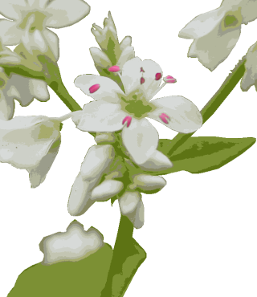

木の実は鳥たちに食べられて種を遠くに運んでもらう。どっちがどう利用していようが一切おかまいなし。

▼幾千
コセンダングサは原野の荒れ地や道ばたなどに群生している1年草。茎は4角形で直立し、高さは50～100cmになる。葉は対生し、茎の下部の葉は2回羽状に裂け、中部の葉は葉柄とともに3全裂または羽状全裂する。側片は卵形で、頂片は卵形～狭卵形で先はとがり、へりには細鋸歯がある。枝の先に舌状花のない黄色の管状花だけからなる頭状花をつける。アイノコセンダングサは外周の筒状花のうち幾つか白く大きくなる。熱帯地方原産の帰化植物。『幾千花アイノコ集うセンダン草』
▼寒き陽
イワシャジンは山地の岩場に生える多年草。根茎はやや太いが、茎は細く高さ30～40cmで斜上またはたれ下がる。茎の葉は互生し、ようへいの長さは5～15mm。葉身は披針形で葉柄がある。まばらな総状花序が茎のさきにつき、数個の花を開く。苞は線形、がくの裂片は5個。花冠は紫色の鍾形。名前の由来は、ツリガネニンジン属などの太い根を乾燥させた漢方の生薬『沙参』からきています。『頂は染まる寒き陽イワシャジン』
▼日本茶
チャは栽培されている常緑低木。葉は有柄で互生し長だ円状披針形～長だ円形で、長さ2.5～5cm、幅2～3cmあり、質は硬く表面につやがあり、凹凸がめだち、ふちには細かい鈍きょ歯がある。10～11月に、葉のつけ根に白色で5弁の花が下向きに開く中国原産であるが、本州・四国・九州の暖地の山地に野生化している。若葉から茶を作る。『温かく色よく香る茶葉の花』
▼生きる知恵
ヤマラッキョウは山地の草原に生える多年草。鱗茎は高さ1.5～3cmの狭卵形、鱗片は灰白色である。花茎は高さ30～60cmになる。茎は線形、断面は鈍い三稜形である。花は茎頂に散形花序をつくってつき、紅色。苞は広卵形、鋭頭。花被片は6枚、広だ円形、円頭である。雄ずい6本。やくは紫色である。果実は倒卵形のさく果で種子は黒色。和名は、葉や鱗茎がラッキョウの臭みをもつことに由来する。『営みに関わり知れずヤマラッキョ』
▼良薬口に苦し
センブリは山野の日当たりのよい乾いた草地や疎林の中などに生える平滑無毛の2年草。根は黄色い。茎は直立し、枝を分け、4角形で紫色を帯び、高さ10～25cmになる。葉は対生し線形。花は白色で紫色のすじがあり、径約2cm。がくは5深裂し、裂片は線状披針形で、花冠も5深裂し、裂片は線状披針形で、花冠も5深裂して、裂片は広披針形で長さ10～15mm。茎部の近くに長毛におおわれた2個の腺体がある。全草を干したものを煎じて飲むと腱胃効果があるが、千回煮だしてもまだ苦いことからこの名がある。薬用植物名はトウヤク（当薬）という。『丈低きセンブリの星輝けり』
▼季節外れ
ノアザミは、日当たりのよい山野の草地に生える多年草。茎は直立し白毛を密生。根生葉は花時にも生存、倒卵状だ円形で羽状に中裂。へりに歯牙があり先端に刺針がある。茎中部の葉は基部が茎を抱く。頭状花は枝先に上を向いて咲く。総苞は扁球形で、総苞片は6～7列に並び背面が粘る。『蕎麦旨し季節外れに咲くアザミ』

▼蕎麦
ソバは、インド北部～中国原産１年草の帰化植物。葉は互生し、長柄があり、心形で先は鋭くとがる。おしべとめしべの長さが違う…異型花柱型の花。虫媒花…昆虫（ハエ、アブ等）が花粉交配。ふ～ん。日本蕎麦は日本人が考えて作った蕎麦だからなのかあ！？『秋さびし蕎麦の生い立ち思い馳せ』
▼陰と陽
南那須町荒川右岸丘陵斜面林、標高１２０～１７０ｍながらブナも生息する貴重な資源林です。１１月下旬ツルリンドウの実を見つけました。リンドウは半日陰の林に生息します。一日じゅう日の当たるところへ持って行けば、もっと花を咲かせるかと言えばそんな事はないようです。それぞれがその環境で完璧に暮らしています。
▼海風
コハマギクは海岸の岩上に生える多年草。長い根茎をのばして繁殖する。茎の高さは10～50cm。上部は紫色を帯びる。根生葉や茎の下部の葉には長い葉柄がある。葉身は広卵状のくさび形で、羽状に5中～浅裂。枝の先に柄を出し、直径4～5cmの頭状花を単生する。舌状花は白色。『海風に何食わぬ顔コハマギク』
▼秋の終わり
ヤクシソウは日当たりのよい山地や丘陵の道ばたややせた裸地などに生える2年草。無毛で、切ると白い乳液がでる。茎は直立し、高さは30～70cmでよく枝を分ける。茎の葉は互生し、長だ円形または倒卵状で、へりに低い歯牙状の鋸歯がある。下部の葉には柄があるが、上部のものにはない。枝先や葉腋に散房状に黄色の頭状花つける。葉の形が薬師如来の光背に似ることから名がついた。『ヤクシソウ終わりを告げる暮れの秋』
▼名前
ハキダメギクは都会付近の空地に生える1年草。全体に長毛が散生し、茎は倒れやすい。葉は葉柄があり対生。頭状花は4～5個の舌状花がある。熱帯アメリカ原産の帰化植物。『冬先に気づいて愛でる異国花』